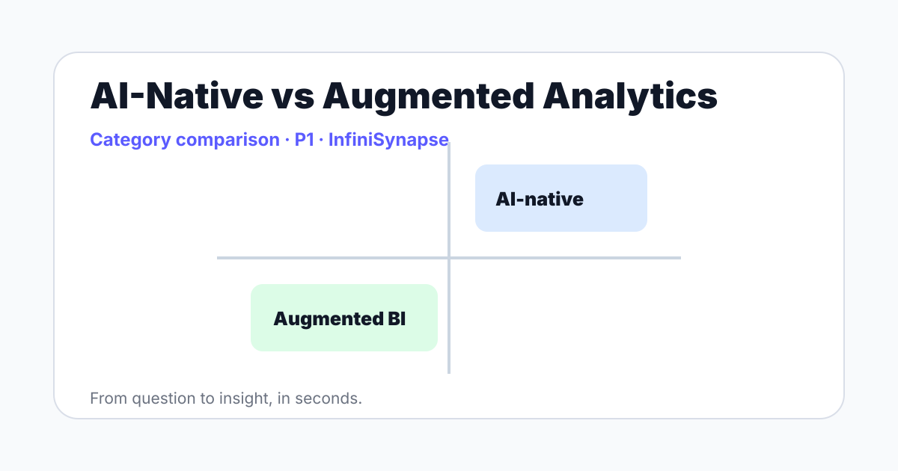

AI-Native vs Augmented Analytics: What Changed in Analytics Architecture
AI-native vs augmented analytics explained. Compare agent-first platforms with BI systems that add AI for insight generation and storytelling in 2026.
AuthorInfiniSynapse Research, product and data architecture team
Updated2026-06-12 · Next review 2026-09-12
Content typeP1 · Category comparison · AI search and SEO guide
Disclosure: This page is published by InfiniSynapse, which builds an enterprise AI data analyst. We include product context where useful, state limitations, cite external sources, and separate category guidance from product positioning.
Key takeaways
ai-native vs augmented analytics should be evaluated by workflow fit, not by AI labeling.
Strong pages and strong products both need definitions, evidence, limits, and decision criteria.
InfiniSynapse is most relevant when the analysis crosses data sources, business context, and explainability requirements.
Direct answer
AI-native vs augmented analytics is a difference in architecture. Augmented analytics adds AI to BI workflows for preparation, insight generation, and explanation. AI-native analytics starts with agents, retrieval, execution tools, memory, and audit trails as the main workflow.
Point of view
Augmented analytics improves BI. AI-native analytics changes the operating model.

Augmented analytics in plain English
Augmented analytics uses AI, machine learning, and natural language to assist data preparation, insight generation, explanation, and exploration inside analytics platforms. It is valuable when teams already have strong BI workflows and want automation inside that environment.
What AI-native changes
AI-native analytics starts from the analysis task rather than the dashboard. The system retrieves context, plans steps, executes work, validates outputs, and generates an explanation or artifact. That requires a different architecture: retrieval, memory, execution, permissions, and logs.
Architecture comparison
Layer
Augmented analytics
AI-native analytics
Primary interface
BI platform with AI assistance
Agentic analysis workflow
Context
Semantic layer and dashboards
Knowledge base, schema, documents
Execution
Guided exploration
Multi-step tool and data actions
Trust model
BI governance
Plan, trace, permissions, audit trail
When augmented analytics wins
Augmented analytics can be the right choice when the company already has mature dashboards, governed metrics, and BI adoption. Adding AI summaries and natural-language exploration may be enough.
When AI-native wins
AI-native analytics is stronger when questions are open-ended, sources are scattered, and business context lives outside the BI model. That is where InfiniSynapse's enterprise AI data analyst positioning is most relevant.
Evaluate InfiniSynapse with a real analysis workflow
Bring one real question, one database or file, and one trusted reviewer. Use the agent plan, source trace, and final output to decide whether AI-native analysis fits your team.
AI-native vs augmented analytics compares agent-first analytics architecture with BI-centered analytics systems that add AI automation to existing workflows.
What is augmented analytics?
Augmented analytics uses AI and machine learning to assist data preparation, insight generation, explanation, and exploration inside analytics platforms.
Is AI-native analytics better than augmented analytics?
AI-native analytics is not always better. It is better for open-ended, cross-source workflows, while augmented analytics can be better for mature BI environments.
How should teams evaluate Gartner augmented analytics trends?
Teams should ask whether the system only assists an existing dashboard or can plan and execute a reviewable analysis workflow.
Methodology and review notes
Last updated: 2026-06-12 · Next scheduled review: 2026-09-12
This guide was written using InfiniSynapse product positioning, public AI-agent research, vendor documentation, and explainability references. The page prioritizes clear definitions, decision frameworks, tables, examples, and limitations over keyword repetition.
Conflict of interest: InfiniSynapse publishes this guide and builds in the data-agent category. We reduce bias by naming cases where a traditional BI, spreadsheet, or copilot workflow may be enough.